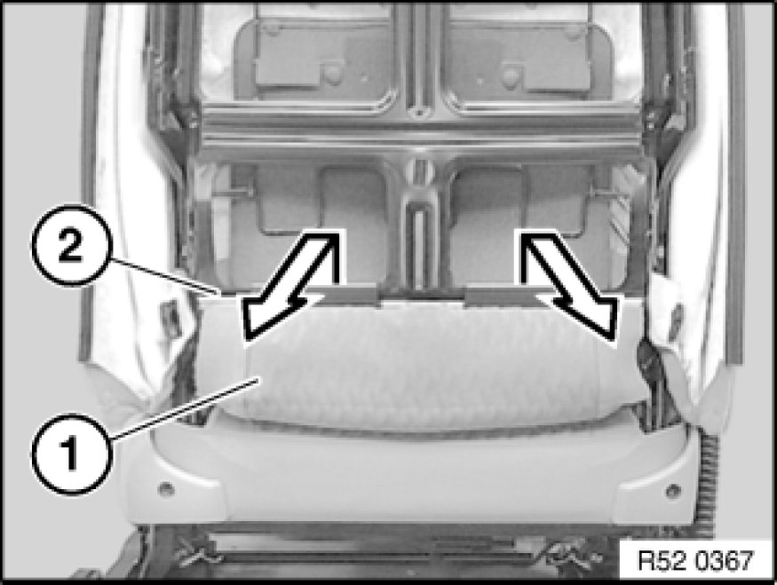
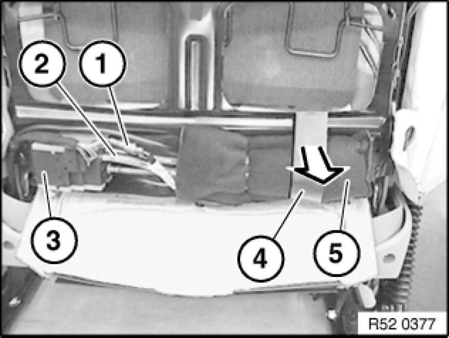
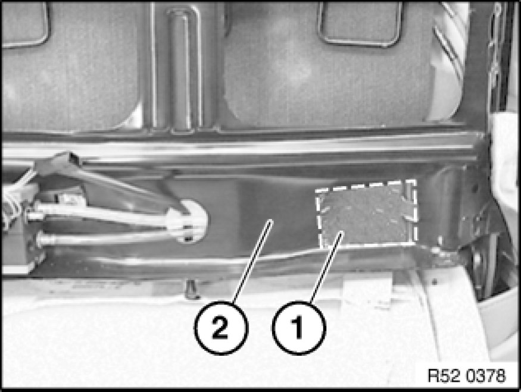
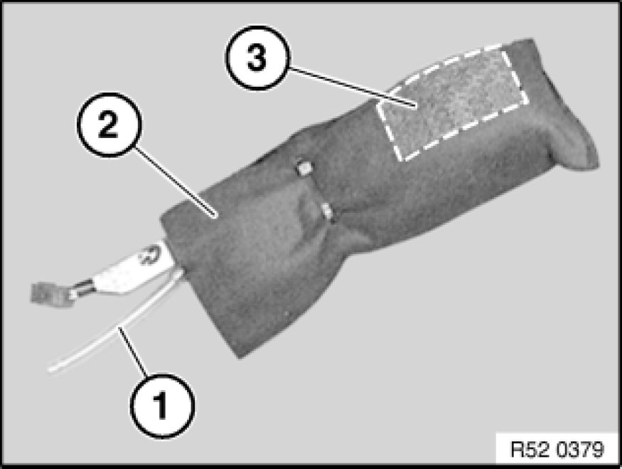

Vacuum/Pressure Pump: Service and Repair
67 66 010 - Removing and installing/replacing lumbar support drive mechanism on front seat, left or right

Necessary preliminary tasks:
- Remove rear panel on front seat backrest
E53 comfort seat:
- Remove rear panel at bottom Removing and Installing/Replacing Bottom Rear Panel on Front Seat Backrest (Luxury Seat)

Detach backrest cover (1) in direction of arrow from backrest frame (2).

Disconnect plug connection (1).
Detach transparent hose (2) from valve housing (3).
Note:
If necessary, gently heat transparent hose (2) if firmly seated.
If necessary, detach fabric adhesive tape (4).
Detach drive unit for lumbar support (5) with jacket in direction of arrow.

Installation:
Clean adhesive area (1) on backrest frame (2).

Installation:
Transparent hose (1) of drive unit for lumbar support must not be kinked.
Pull off protective film (3) from jacket (2). Stick drive unit for lumbar support to backrest frame.
If necessary, secure jacket (2) with cable strap.